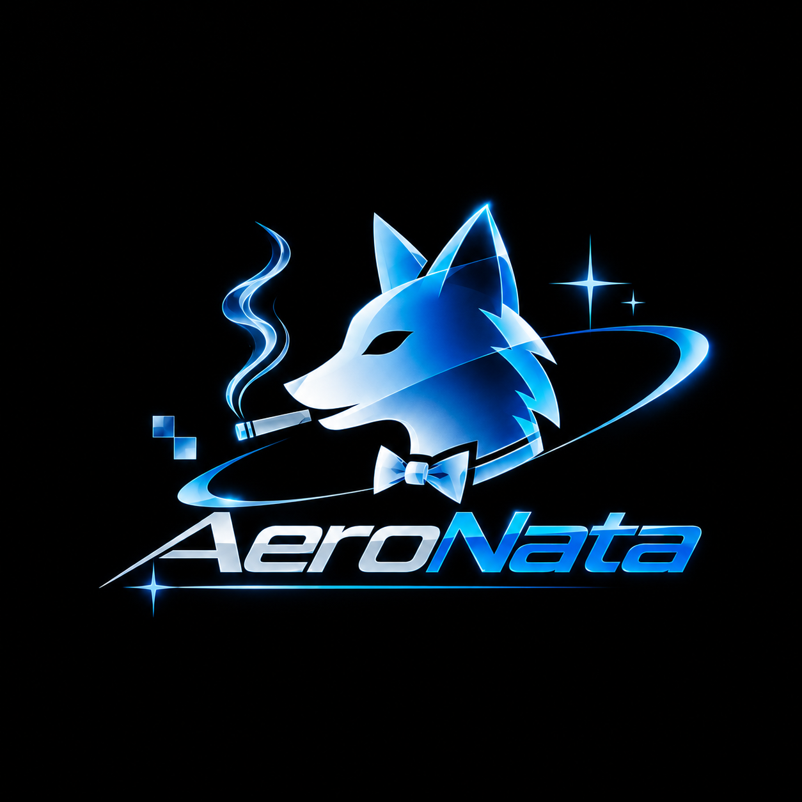

PORTAL 01 · NATUREZA + TECNOLOGIA
O mundo que nos prometeram
Uma viagem pelo Frutiger Aero e pela promessa de um futuro limpo, otimista e conectado à natureza — com ideias práticas para cuidar do mundo real.
Entrar no portal ↗
AeroNataARQUIVO VISUAL INDEPENDENTE · VERSÃO 1.0
Um arquivo de estéticas, subculturas e mundos visuais. Do futuro brilhante dos anos 2000 aos cantos estranhos da internet — encontre a linguagem que combina com você.
01 / O ARQUIVO
Uma coleção em constante expansão de universos visuais.
Nenhuma estética encontrada. Tente outra busca ou categoria.
02 / QUIZ AERONATA
15 escolhas, algumas memórias e nenhum resultado óbvio. Descubra qual universo visual mais combina com você.
Não existem respostas certas. O AeroNata cruza suas escolhas entre várias estéticas — inclusive variantes da família Frutiger.
03 / PORTAIS ESPECIAIS
Duas experiências para atravessar o visual e chegar às ideias por trás dele.
PORTAL 01 · NATUREZA + TECNOLOGIA
Uma viagem pelo Frutiger Aero e pela promessa de um futuro limpo, otimista e conectado à natureza — com ideias práticas para cuidar do mundo real.
Entrar no portal ↗PORTAL 02 · MEMÓRIA DA WEB
GIFs, páginas pessoais, fóruns, pixels e descobertas sem fim. Relembre uma web cheia de pequenos mundos feitos por pessoas.
Viajar no tempo ↗04 / SOBRE O PROJETO
O AeroNata é um arquivo independente para descobrir estéticas visuais, entender de onde vieram e explorar como elas continuam influenciando a cultura digital. É um projeto em evolução: as descrições são introduções, não uma enciclopédia definitiva.